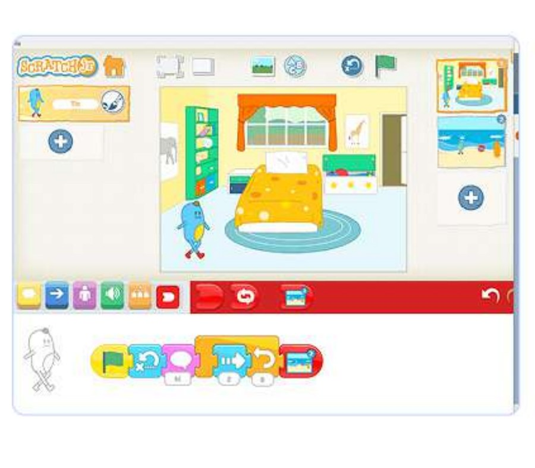

Contoh tampilan/proyek dari Modul 07
Modul ini menggabungkan keamanan internet dasar (mengenali tanda-tanda sederhana konten yang tidak aman) dengan presentasi kreatif di Google Slides, serta eksplorasi musik digital pertama anak.
Keamanan digital adalah keterampilan hidup penting yang harus diperkenalkan sejak dini dengan bahasa yang tidak menakutkan. Google Slides yang dipelajari di sini juga akan dipakai lagi untuk portofolio akhir di Modul 8.
Anak mengenali tanda sederhana sesuatu yang "tidak aman" di internet, membuat presentasi bergambar dan berwarna di Google Slides, dan bereksperimen menciptakan melodi atau lagu pendek sendiri.
Sebelum mengajar modul ini, pastikan Anda 100% percaya diri dengan hal-hal berikut:
Bahas topik keamanan internet dengan nada tenang, bukan menakut-nakuti — tujuannya membangun rasa aman untuk bertanya, sesuai prinsip keamanan psikologis di Bagian 2.
Sebagai hasil modul ini, anak-anak belajar berperilaku aman di internet, membuat presentasi warna-warni di Google Slides, dan bahkan menguasai proses pembuatan musik digital!
Jawab kelima pertanyaan berikut tentang modul ini. Anda perlu mendapat 70% atau lebih (minimal 4 dari 5 benar) untuk melanjutkan.
1. Kenapa topik keamanan internet penting diperkenalkan di usia 5-7 tahun?
2. Bagaimana seharusnya tutor merespons jika anak bercerita pernah melihat sesuatu yang tidak nyaman di internet?
3. Google Slides yang dipelajari di modul ini juga akan dipakai lagi untuk...
4. "Cyber-Detektif: Berburu Virus" mengajarkan konsep dasar apa?
5. Nada yang tepat saat membahas keamanan internet dengan anak usia ini adalah...